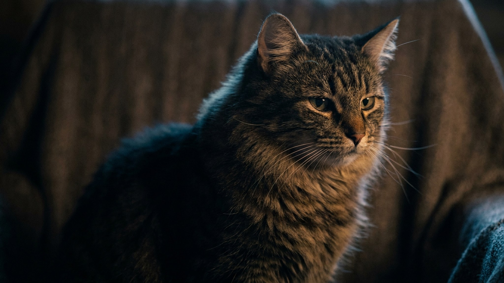

Кошка забирается на плед, начинает ритмично мять его лапами и посасывает край, прикрыв глаза, — а через минуту переключается и увлечённо лижет целлофановый пакет. Выглядит странно, но это не вредность и не глупость: за каждым из этих действий стоит понятная причина. Разберём, откуда берётся привычка, когда она безобидна, а когда пора показать кошку ветеринару, и как её мягко перенаправить.
🐾 У вашей кошки так же?
Расскажите в AnimaLife, как ведёт себя ваш питомец, — приложение объяснит причину и даст пошаговый план. Бесплатно, без записи к специалисту.
Разобрать свой случай → Разобрать в MAX →
У вас iPhone? AnimaLife есть в App Store
Посасывание пледа, свитера или мочки уха хозяина почти всегда родом из котёнкового детства. Движение лапами и сосание связаны у кошки с кормлением у матери и ощущением полной безопасности.
Сам по себе «массаж с сосанием» пледа — обычно безобидная привычка на всю жизнь. Тревожно становится, когда кошка не просто мусолит, а отрывает и проглатывает нитки и кусочки ткани.
Тяга лизать целлофан, полиэтилен и другие несъедобные вещи часто удивляет хозяев сильнее всего. Причин несколько, и они бывают безобидными и не очень.
Сама привычка не опасна, опасны последствия — проглоченные нитки и куски плёнки могут застрять в пищеварительном тракте. Не откладывайте визит к ветеринару, если замечаете:
Что именно за этим стоит и нужно ли обследование — определит врач. Ваша задача — заметить и точно описать, что и как часто делает кошка.
Ругать и отнимать бесполезно: наказание добавляет стресса, а стресс усиливает сосание. Работает другое — убрать соблазн и дать кошке чем заняться.
Материал носит информационный характер и не заменяет очную консультацию ветеринара.
🐾 Хотите понять, что кошка говорит вам?
Опишите ситуацию или пришлите видео в AnimaLife — AI разберёт поведение вашего питомца и подскажет, что делать. Бесплатно, ответ за минуту.
Разобрать поведение → Разобрать в MAX →
У вас iPhone? AnimaLife есть в App Store
🐾 Понравился разбор?
Подпишитесь на канал — каждый день разбираем по одному тревожному симптому у кошек и собак: что в пределах нормы, а когда пора к врачу. Подпишитесь, чтобы не пропустить разбор, который может спасти здоровье вашего питомца.